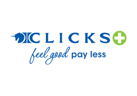
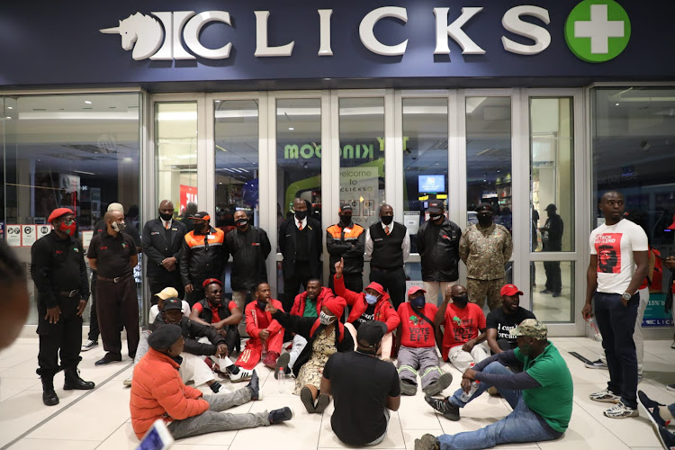
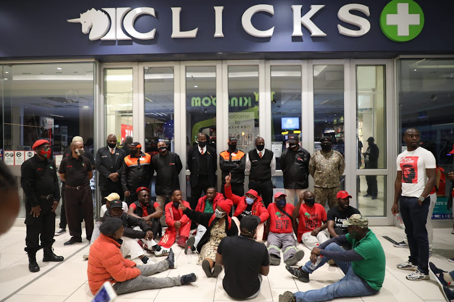

Founded by visionary retailer Jack Goldin, the first Clicks store opens its doors on 6 August, 1968 in St George's Street in Cape Town. Clicks was originally conceived as a drugstore but owing to restrictive legislation in South Africa at the time Jack's pharmacy dream was only realised 35 years later.
Trading hours
- Mon-Fri : 08:00h - 18:00h
- Sat : 07:00h - 21:00h
- Sun : 09:00h - 10:00h